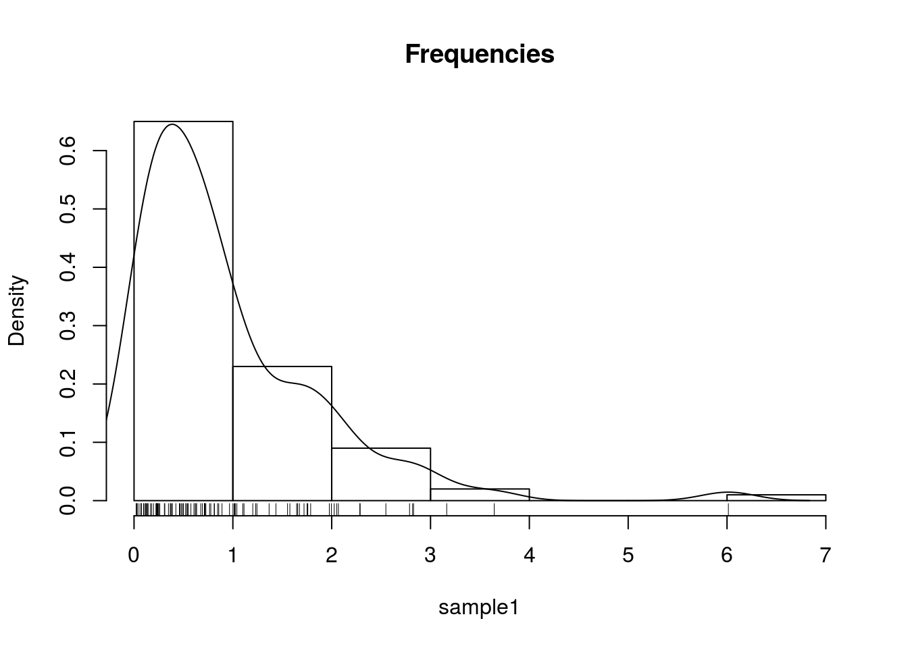
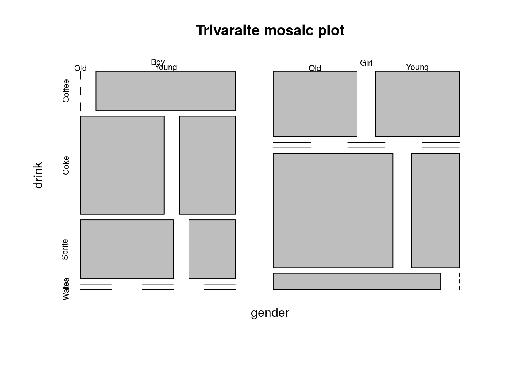
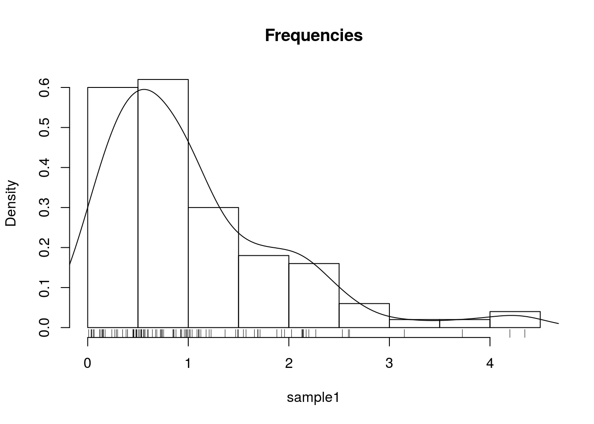
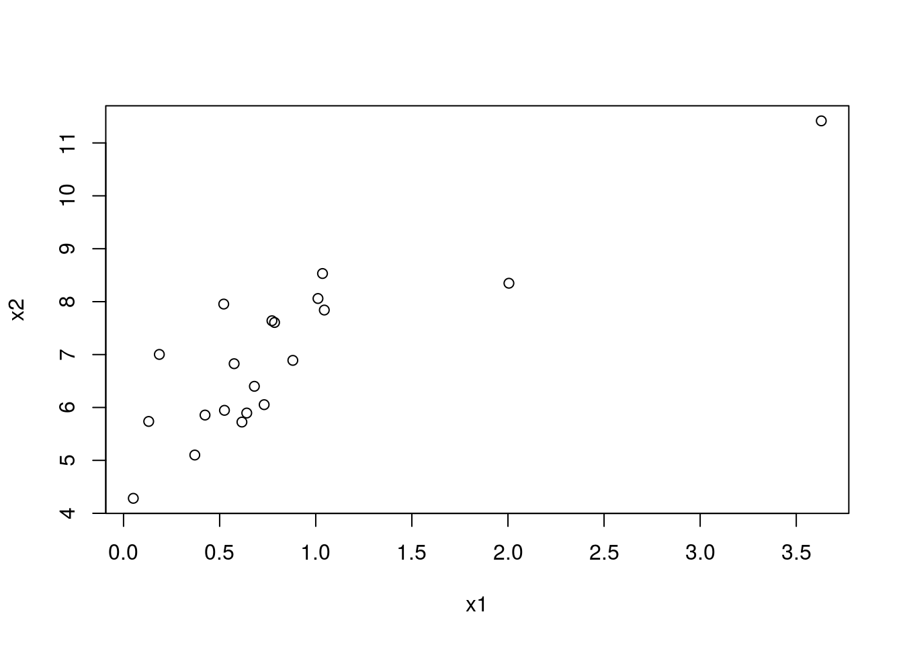
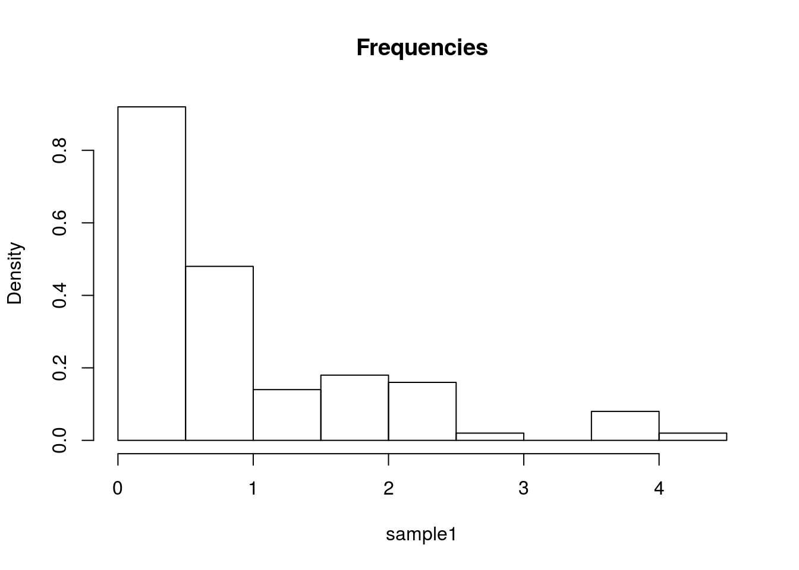
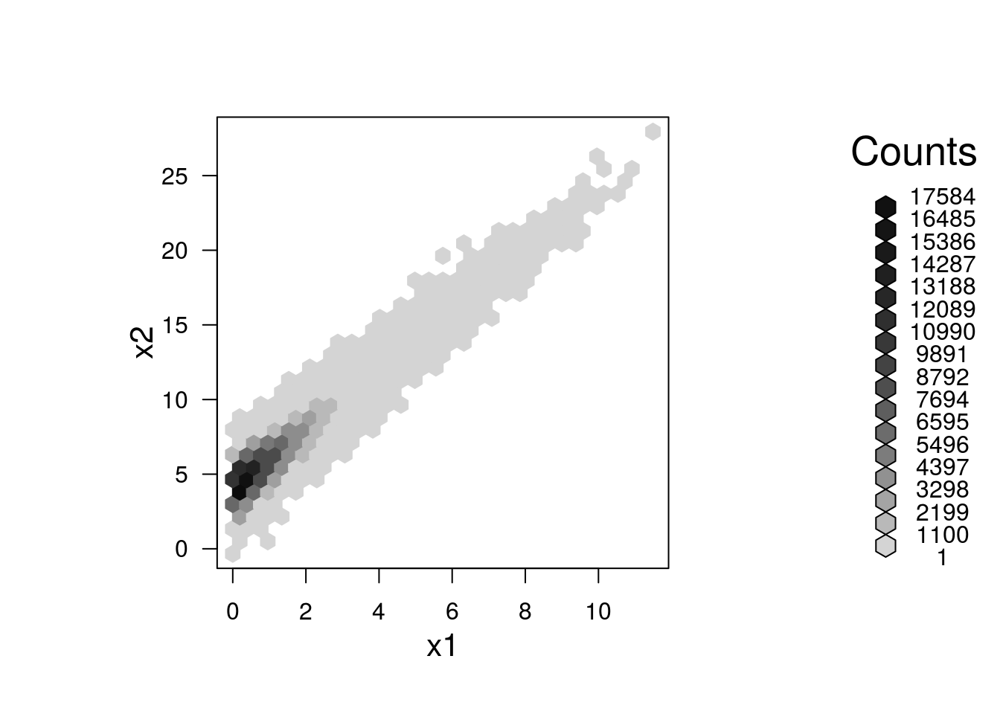
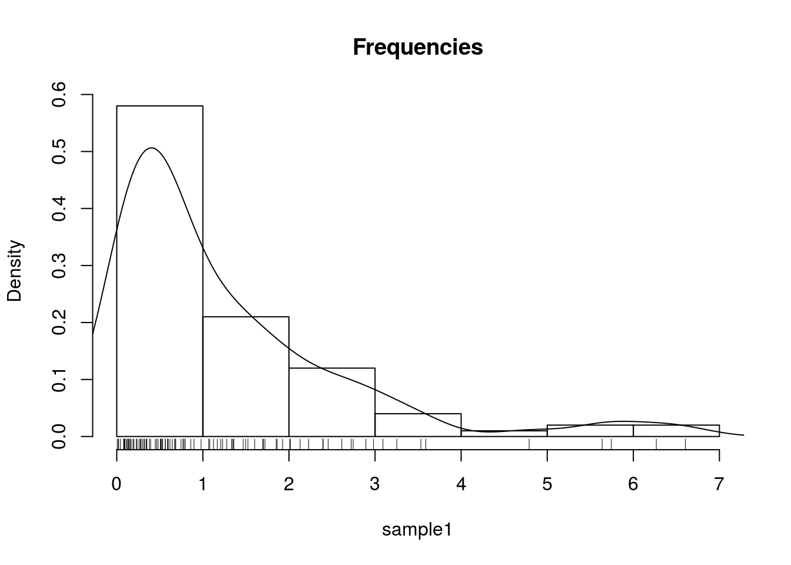
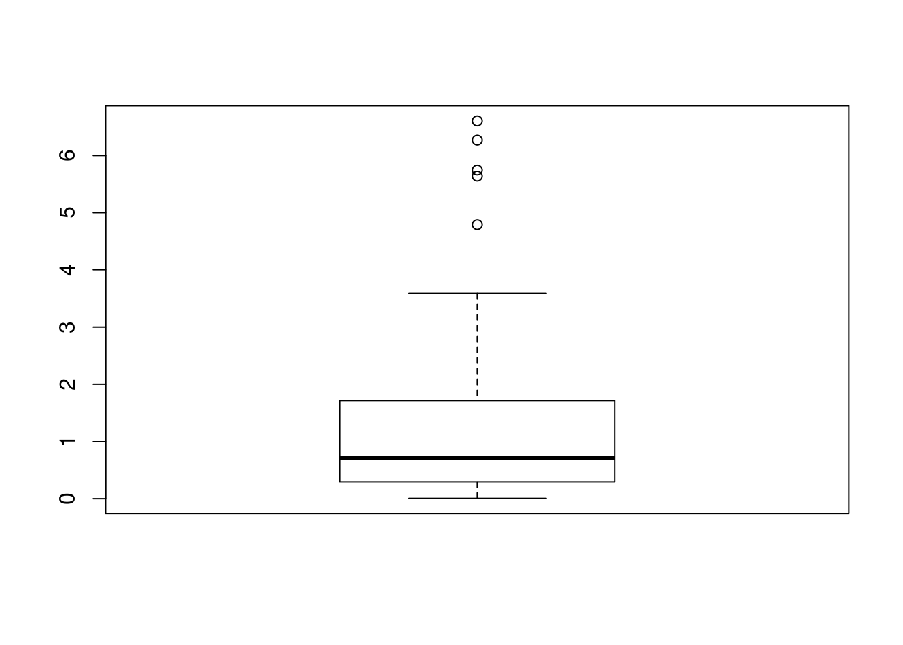
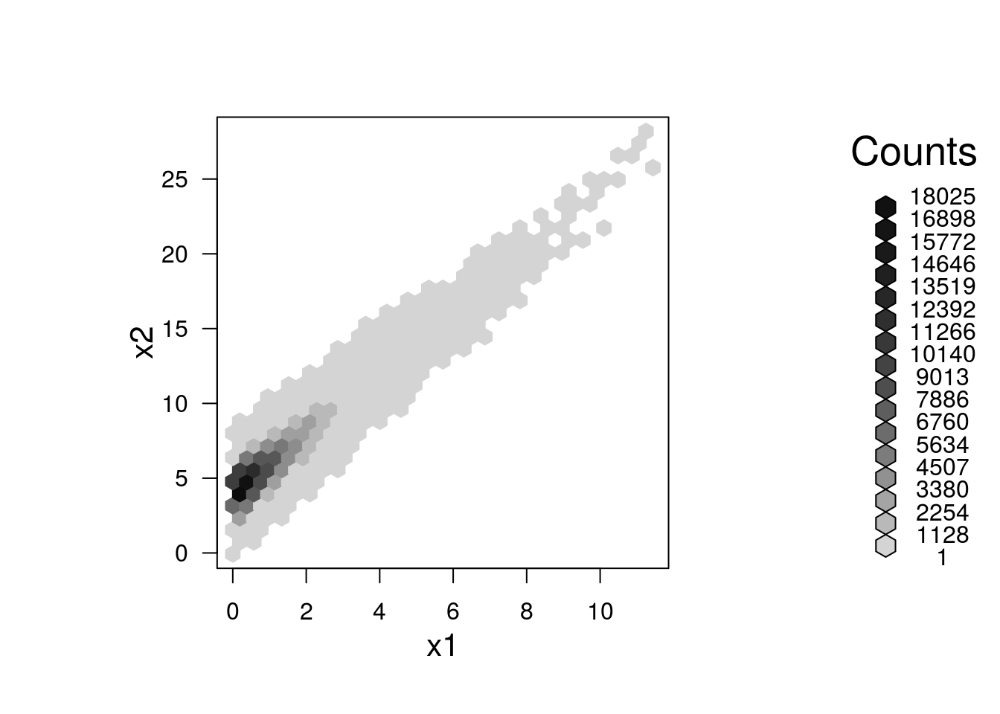
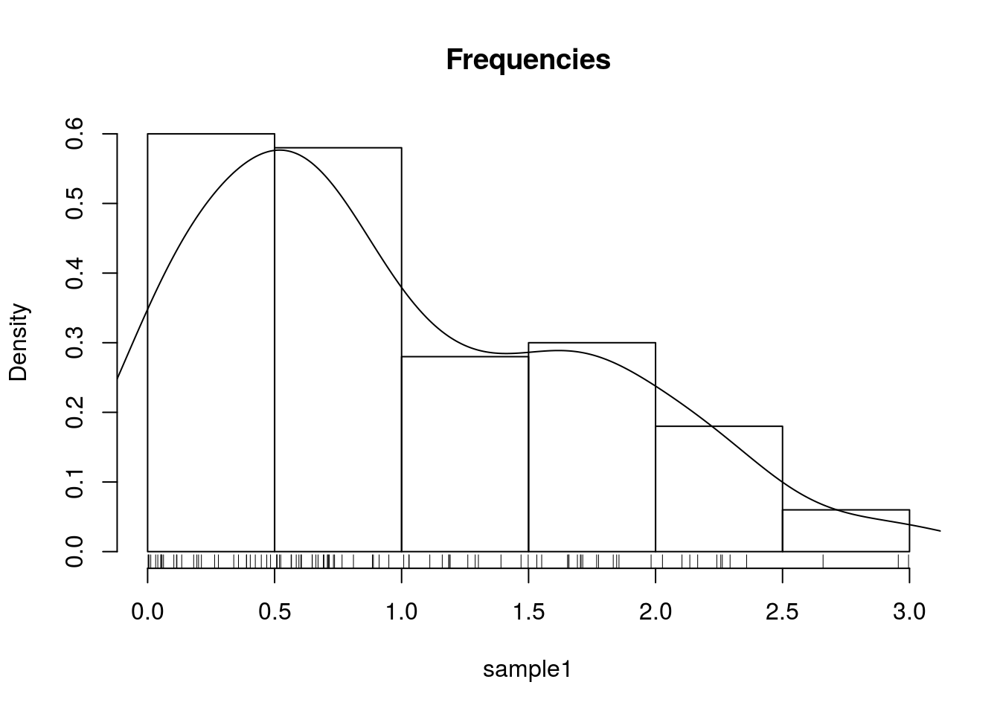

Chapter 4 Exploratory Data Analysis
Exploratory Data Analysis (EDA) is a term cast by John W. Tukey in his seminal book (Tukey 1977). It is the practice of inspecting, and exploring your data, before stating hypotheses, fitting predictors, and other more ambitious inferential goals. It typically includes the computation of simple summary statistics which capture some property of interest in the data, and visualization. EDA can be thought of as an assumption free, purely algorithmic practice.
In this text we present EDA techniques along the following lines:
- How we explore: with a summary statistic or visually?
- How many variable analyzed simultaneously: univariate, bivariate, or multivariate?
- What type of variable: categorical or continuous?
4.1 Summary Statistics
4.1.1 Categorical Data
Categorical variables do not admit any mathematical operations on them. We cannot sum them, or even sort them. We can only count them. As such, summaries of categorical variables will always start with the counting of the frequency of each category.
4.1.1.1 Summary of Univariate Categorical Data
gender <- c(rep('Boy', 10), rep('Girl', 12))
drink <- c(rep('Coke', 5), rep('Sprite', 3), rep('Coffee', 6), rep('Tea', 7), rep('Water', 1))
age <- sample(c('Young', 'Old'), size = length(gender), replace = TRUE)
table(gender)## gender
## Boy Girl
## 10 12table(drink)## drink
## Coffee Coke Sprite Tea Water
## 6 5 3 7 1table(age)## age
## Old Young
## 13 9If instead of the level counts you want the proportions, you can use prop.table
prop.table(table(gender))## gender
## Boy Girl
## 0.4545455 0.54545454.1.1.2 Summary of Bivariate Categorical Data
library(magrittr)
cbind(gender, drink) %>% head # inspect the raw data## gender drink
## [1,] "Boy" "Coke"
## [2,] "Boy" "Coke"
## [3,] "Boy" "Coke"
## [4,] "Boy" "Coke"
## [5,] "Boy" "Coke"
## [6,] "Boy" "Sprite"table1 <- table(gender, drink)
table1 ## drink
## gender Coffee Coke Sprite Tea Water
## Boy 2 5 3 0 0
## Girl 4 0 0 7 14.1.1.3 Summary of Multivariate Categorical Data
You may be wondering how does R handle tables with more than two dimensions. It is indeed not trivial, and R offers several solutions: table is easier to compute with, and ftable is human readable.
table2.1 <- table(gender, drink, age) # A multilevel table.
table2.1## , , age = Old
##
## drink
## gender Coffee Coke Sprite Tea Water
## Boy 0 3 2 0 0
## Girl 2 0 0 5 1
##
## , , age = Young
##
## drink
## gender Coffee Coke Sprite Tea Water
## Boy 2 2 1 0 0
## Girl 2 0 0 2 0table.2.2 <- ftable(gender, drink, age) # A human readable table.
table.2.2## age Old Young
## gender drink
## Boy Coffee 0 2
## Coke 3 2
## Sprite 2 1
## Tea 0 0
## Water 0 0
## Girl Coffee 2 2
## Coke 0 0
## Sprite 0 0
## Tea 5 2
## Water 1 0If you want proportions instead of counts, you need to specify the denominator, i.e., the margins.
prop.table(table1, margin = 1)## drink
## gender Coffee Coke Sprite Tea Water
## Boy 0.20000000 0.50000000 0.30000000 0.00000000 0.00000000
## Girl 0.33333333 0.00000000 0.00000000 0.58333333 0.08333333prop.table(table1, margin = 2)## drink
## gender Coffee Coke Sprite Tea Water
## Boy 0.3333333 1.0000000 1.0000000 0.0000000 0.0000000
## Girl 0.6666667 0.0000000 0.0000000 1.0000000 1.00000004.1.2 Continous Data
Continuous variables admit many more operations than categorical. We can thus compute sums, means, quantiles, and more.
4.1.2.1 Summary of Univariate Continous Data
We distinguish between several types of summaries, each capturing a different property of the data.
4.1.2.2 Summary of Location
Capture the “location” of the data. These include:
The sample mean is non robust. A single large observation may inflate the mean indefinitely. For this reason, we define several other summaries of location, which are more robust, i.e., less affected by “contaminations” of the data.
We start by defining the sample quantiles, themselves not a summary of location.
We emphasize that sample quantiles are non-uniquely defined. See ?quantile for the 9(!) different definitions that R provides.
We can now define another summary of location, the median.
A whole family of summaries of locations is the alpha trimmed mean.
The simple mean and median are instances of the alpha trimmed mean: \(\bar x_0\) and \(\bar x_{0.5}\) respectively.
Here are the R implementations:
x <- rexp(100)
mean(x) # simple mean## [1] 1.056362median(x) # median## [1] 0.7541717mean(x, trim = 0.2) # alpha trimmed mean with alpha=0.2## [1] 0.85565234.1.2.3 Summary of Scale
The scale of the data, sometimes known as spread, can be thought of its variability.
For reasons of robustness, we define other, more robust, measures of scale.
where \(c\) is some constant, typically set to \(c=1.4826\) so that the MAD is a robust estimate of \(S(x)\).
Here are the R implementations
sd(x) # standard deviation## [1] 0.9672829mad(x) # MAD## [1] 0.8384355IQR(x) # IQR## [1] 1.310214.1.2.4 Summary of Asymmetry
The symmetry of a univariate sample is easily understood. Summaries of asymmetry, also known as skewness, quantify the departure of the \(x\) from a symmetric sample.
Here is an R implementation
yule <- function(x){
numerator <- 0.5 * (quantile(x,0.75) + quantile(x,0.25))-median(x)
denominator <- 0.5* IQR(x)
c(numerator/denominator, use.names=FALSE)
}
yule(x)## [1] 0.27767374.1.2.5 Summary of Bivariate Continous Data
When dealing with bivariate, or multivariate data, we can obviously compute univariate summaries for each variable separately. This is not the topic of this section, in which we want to summarize the association between the variables, and not within them.
We emphasize this is not the covariance you learned about in probability classes, since it is not the covariance between two random variables but rather, between two samples. For this reasons, some authors call it the empirical covariance.
r(x,y), is defined as \[r(x,y):=\frac{Cov(x,y)}{S(x)S(y)}. \]
If you find this definition enigmatic, just think of the correlation as the covariance between \(x\) and \(y\) after transforming each to the unitless scale of z-scores.
We thus have that \(r(x,y)=Cov(z(x),z(y))\).
4.1.2.6 Summary of Multivariate Continous Data
The covariance is a simple summary of association between two variables, but it certainly may not capture the whole “story”. Things get more complicated when summarizing the relation between multiple variables. The most common summary of relation, is the covariance matrix, but we warn that only the simplest multivariate relations are fully summarized by this matrix.
4.2 Visualization
Summarizing the information in a variable to a single number clearly conceals much of the story in the sample. This is akin to inspecting a person by its caricature, instead of a picture. Visualizing the data, when possible, is more informative.
4.2.1 Categorical Data
Recalling that with categorical variables we can only count the frequency of each level, the plotting of such variables are typically variations on the bar plot.
4.2.1.1 Visualizing Univariate Categorical Data
plot(table(age))
4.2.1.2 Visualizing Bivariate Categorical Data
There are several generalizations of the barplot, aimed to deal with the visualization of bivariate categorical data. There are sometimes known as the clustered bar plot and the stacked bar plot. In this text, we advocate the use of the mosaic plot which is also the default in R.
plot(table1, main='Bivariate mosaic plot')
4.2.1.3 Visualizing Multivariate Categorical Data
The mosaic plot is not easy to generalize to more than two variables, but it is still possible (at the cost of interpretability).
plot(table2.1, main='Trivaraite mosaic plot')
4.2.2 Continous Data
4.2.2.1 Visualizing Univariate Continous Data
Unlike categirical variables, there are endlessly many way to visualize continuous variables. The simplest way is to look at the raw data via the stripcart.
sample1 <- rexp(10)
stripchart(sample1)
Clearly, if there are many observations, the stripchart will be a useless line of black dots. We thus bin them together, and look at the frequency of each bin; this is the histogram. R’s histogram function has very good defaults to choose the number of bins.
sample1 <- rexp(100)
hist(sample1, freq=T, main='Counts') 
hist(sample1, freq=F, main='Frequencies') 
The bins of a histogram are non overlapping. We can adopt a sliding window approach, instead of binning. This is the density plot which is produced with the density function, and added to an existing plot with the lines function. The rug function adds the original data points as ticks on the axes, and is strongly recommended to detect artifacts introduced by the binning of the histogram, or the smoothing of the density plot.
hist(sample1, freq=F, main='Frequencies')
lines(density(sample1))
rug(sample1)
One particularly useful visualization, due to John W. Tukey, is the boxplot. The boxplot is designed to capture the main phenomena in the data, and simultaneously point to outliers.
boxplot(sample1) 
4.2.2.2 Visualizing Bivariate Continous Data
The bivariate counterpart of the stipchart is the celebrated scatter plot.
n <- 20
x1 <- rexp(n)
x2 <- 2* x1 + 4 + rexp(n)
plot(x2~x1)
Like the univariate stripchart, the scatter plot will be an uninformative mess in the presence of a lot of data. A nice bivariate counterpart of the univariate histogram is the hexbin plot, which tessellates the plane with hexagons, and reports their frequencies.
library(hexbin)
n <- 2e5
x1 <- rexp(n)
x2 <- 2* x1 + 4 + rnorm(n)
plot(hexbin(x = x1, y = x2))
4.2.2.3 Visualizing Multivariate Continous Data
Visualizing multivariate data is a tremendous challenge given that we cannot grasp \(4\) dimensional spaces, nor can the computer screen present more than \(2\) dimensional spaces. We thus have several options: (i) To project the data to 2D. This is discussed in the Dimensionality Reduction Section 10.1. (ii) To visualize not the data, but the summaries, like the covariance matrix.
Since the covariance matrix, \(\hat \Sigma\) is a matrix, it can be visualized as an image.
covariance <- cov(longley) # The covariance of the longley dataset
lattice::levelplot(covariance)
4.3 Bibliographic Notes
Like any other topic in this book, you can consult Venables and Ripley (2013). The seminal book on EDA, written long before R was around, is Tukey (1977). For an excellent text on robust statistics see Wilcox (2011).
4.4 Practice Yourself
Bibliography
Tukey, John W. 1977. Exploratory Data Analysis. Reading, Mass.
Venables, William N, and Brian D Ripley. 2013. Modern Applied Statistics with S-Plus. Springer Science & Business Media.
Wilcox, Rand R. 2011. Introduction to Robust Estimation and Hypothesis Testing. Academic Press.